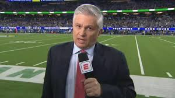

La NFL es la unica liga de futbol americano profecional que se conforma de dos conferencias
adentro de la misma NFL estas dos conferencias son La Americana y La Nacional que dividen a
los equipos conforme a su ubicacion de su ciudad de origen en la NFL se juega final de
conferencia entre los mejores dos equipos de cada conferncia y luego los que ganen pasan al
Super Bowl en donde juegan los mejores equipos de cada conferencia y el que gane es el
camperon de la NFL.
Motivación
Escogí este tema porque el futbol americano es un deporte que sigo mucho mas que nada viendo
los partidos de la NFL y lo que me gusta de este depote es que todos los partidos sin
importar los equipos seran partidos de mucha emocion.
NFL
Los 10
mejores equipos de la historia
de la NFL
25/11/2021
Green Bay Packers de 1996
St. Louis Rams de 1999
Pittsburgh Steelers de 1975
San Francisco 49ers de 1994
Washington Redskins de 1991
Miami Dolphins de 1972
San Francisco 49ers de 1989
Green Bay Packers de 1962
San Francisco 49ers de 1984
Chicago Bears de 1985
Esto es una lista de los 10 mejores equipos en la historia de la NFL
Aqui te dejo varias paginas de internet y redes sociales de expertos para que te informen,
den resultados de partidos, te expliquen de que trata si eres nuevo y quieres aprender mas
sobre este deporte hata de juegos de apuesta y de entretenimiento que se llevana caba por
este depote como el FANTASY.

Expertos
Video NFL
20/02/2022
Aquí les dejo un video de las mejores recepciones de la temporada 2021/2022
Investigación
21/01/2022
Super Bowl
Super Bowl es el nombre que se le da al partido final del campeonato de la National
Football
League(NFL) principal campeonato profesional de fútbol americano en Estados Unidos, en
el
que se enfrentan los campeones de la Conferencia Nacional y de la Conferencia Americana.
Hace un año, la edición LIV del Super Bowl, ganada por los Kansas City Chiefs a los 49ers
de
San Francisco, encumbró al mariscal de campo Patrick Mahomes, en una gran fiesta
deportiva
celebrada en un abarrotado Hard Rock Stadium de Miami, y con una audiencia televisiva
que
superó los 102 millones de telespectadores sólo en Estados Unidos.
El año pasado se jugo el super bowl numero 55 entre los campeones de cada conferencia de
parte de la conferencia Americana se encontraban los Kansas City Chiefs y por la
conferencia
Nacional se encontraban Los Bucaneros de Tampa Bay, este Super Bowl quedo en la historia
de
la NFL ya que fue el primer Super Bowl que un equipo lo juega en su campo en este caso
el
Super Bowl se disputo en la ciudad de Tampa Bay sede de el equipo que jugaria esta final
por
parte de la conferencia nacional, que se terminaron llevando la victoria y asi
cumpliendo y
ampliando el record personal de su QB Tom Brady por ganar su septimo anillo de Super
Bowl.
En el 2019 se jugo el Super Bowl numero 53 entre Los Angeles Rams y Los Patriotas de
Nueva
Inglaterra este Super Bowl se jugo en la ciudad de Atlanta(USA) en el estadio
Mercedes-Benz
Stadium y para mi y para muchos aficionados de este deporte este Super Bowl fue uno de
los
mas aburridos y de los partidos con menos emocion en la historia de una final de la NFL
ya
que el marcador final fue de un 13-3 solo teniendo un touchdown en todo el partido a
favor
de Los Patriotas de Nueva Inglaterra que se llevarian la victoria y asi empatar a los
Acereros de Pittsburgh como los equipos mas ganadores de esta competencia con 6
camperonatos.
Aquí hay una estadistica de la opotunidad que tienen de ganr la competencia en base a su
desempeño
Messi y Cristianoa lo largo de la hiostoria.
Messi es el mejor jugador de la historia y no lo dice una persona lo dice las
estadísticas y premios que ha logrado conseguir tanto individuales como con su equipo o
selección, aunque haya mucho gente que se aponga Messi es el mejor en todo, Messi es un
jugador al cual no puedes predecir y hace de todo meter goles, hacer asistencias, crea
oportunidades, da pases increíbles, regatea a equipos enteros y siempre aparece en cada
minuto de partido, cuando Messi tiene el balón nadie sabe que es lo que va a hacer nunca
hace siempre la misma jugada por eso es tan impredecible.
A lo largo de la historia Messi estuvo en un único equipo hasta que se fue al PSG hace
poco, estuvo casi toda su vida en el Futbol club Barcelona y desde que llegó todos
vieron que era un jugador excepcional, el Barca antes de que llegará Messi sólo tenía
una Champions y después de que llegó gano 4 más ahora tiene 5, él es la mayor leyenda de
la historia del club porque le dio de todo al Barca Ligas ,Champions, Súper copas, etc,
además Messi en argentina el año pasado el 10 de julio del 2021 ganó la Copa américa que
era algo quería demasiado porque no ha ganado mucho con su selección y al fin lo
consiguió.
Cristiano Ronaldo es el mejor goleador de la historia a que ha sabido adaptarse a lo que
el equipo necesita y va a pasar a la historia gracias a que es una máquina de hacer
goles ya que es una de los máximos goleadores de toda la historia con 801 goles
actualmente, 450 fueron con el real Madrid el equipo donde brillo muchísimo y uno de los
mejores equipos que se han visto que ha ganado 13 Champions en todo su historia,
Cristiano es conocido también como Mr. Champions ya que ha ganado 5 Champions una con el
Manchester United y 4 con el Real Madrid.
Messi y Cristiano son sin lugar a dudas los dos mejores jugadores y no cnocen limites ya
que siguen ganando y rompiendo records en cada día y en la Champions no se quedan atrás
ya que Cristiano con 5 y Messi con 4 han ganado de todo y han roto cada record, en goles
asistencias regates y muchas cosas más, pero, si nos fijamos sobre todo en los goles y
en las asistencias nos daremos cuenta que ellos encabezan la lista como goleadores,
Cristiano Ronaldo fue el máximo anotador de la Champions en más ediciones con siete,
seguido por las seis de Lionel Messi.2
El Fc Bacerlona y su gran historia
El Barcelona es un equipo muy grande y es conocido por tener al mejor equipo de la
historia con Messi, Xavi, Iniesta, Puyol, Dani Alves, Jordi alba, etc., ese equipo gano
infinidad de cosas y nadie podía superarlo, tenía un juego increíble con el famoso Tiki
Taka o como dice Koeman tiki taki, era una estrategia de pases de primer toque rápidos y
muy inteligentes para que así el equipo contrario no tenga tiempo de alcanzar a
presionar lo suficiente como para quitar el balón y así ellos siempre tienen el balón y
pueden hacer jugadas mejor organizadas y sin ser predecibles.
El mediocampo del FC Barcelona está llena de jóvenes promesas, ya que en este equipo
están Gavi el más joven con 17 años, Nico con 20 años, Pedri con 19 años, Frenkie de
Jong con 24 años, Riqui Puig con 22 años y un veterano que es un jugador que es una
leyenda en el club por todos los años que ha estado y él ha estado en muchas de las
ocasiones en las que el equipo ha quedado campeón este es el jugador español de 33 años
y actualmente es el capitán del equipo es Sergio Busquets el medio centro defensivo de
Barca.
El barca en la actualidad tiene una delantera increíble con jugadores jóvenes y algunos
veteranos, Ansu fati jugador español de 19 años que es un jugador increíble, Memphis
Depay con 27 años, Luuk de Jong con 31 años Martin Braithwaite con 30 años, Ousmane
Dembélé aunque este jugador ya está a punto de irse ya que al no dar la confianza al
nuevo proyecto de Xavi y el jugador lo que hace es pedir demasiado dinero que el club no
puede pagar y a este jugador no le importa a pesar de que en 4 años ha estado la mitad
del tiempo lesionado .
El barca es uno de los equipos con más Champions en toda la historia del futbol, en esta
competición europea el Barca está en el cuarto lugar con 5 Champions por debajo del
Bayern Múnich y El Liverpool que tienen 6, el A.C Milan que tiene 7 y el equipo con más
victorias en esta competición es el equipo de España que actualmente está en el primer
lugar en su la Liga española con una diferencia de 5 puntos con el segundo lugar y de 17
puntos con el Barcelona es el Real Madrid que tiene 13 victorias y tres de ellas
consecutivas, pero, para el barca el primer título se hizo esperar: llegó en 1992,
cuando el campeonato aún se denominaba Copa de Europa.3
 NFL
NFL
 Los 10
mejores equipos de la historia
de la NFL
Los 10
mejores equipos de la historia
de la NFL

 Referencias de futbol americano
Referencias de futbol americano Video NFL
Video NFL Investigación
Investigación 
 Haaland gran promesa del FÚTBOL
Haaland gran promesa del FÚTBOL